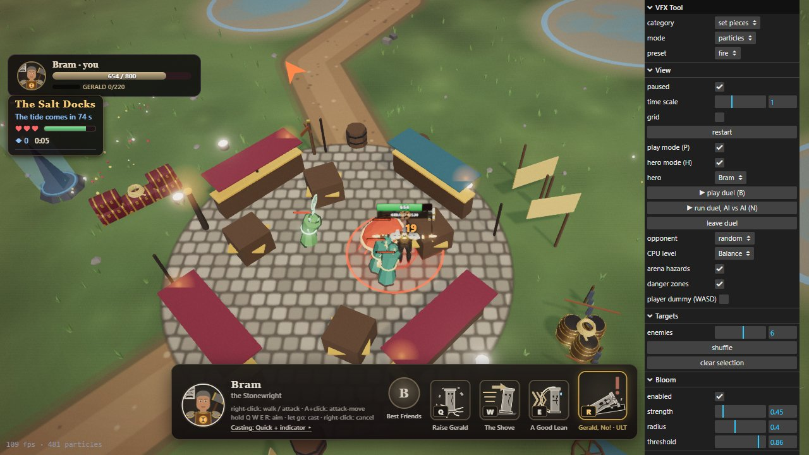
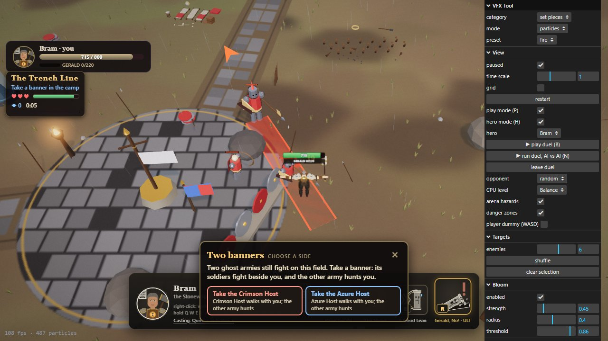
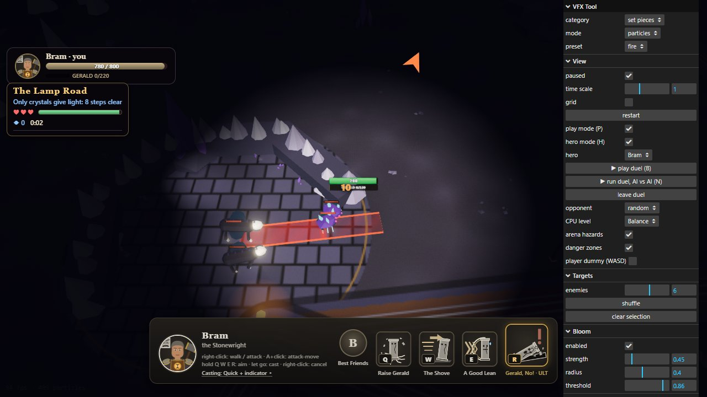
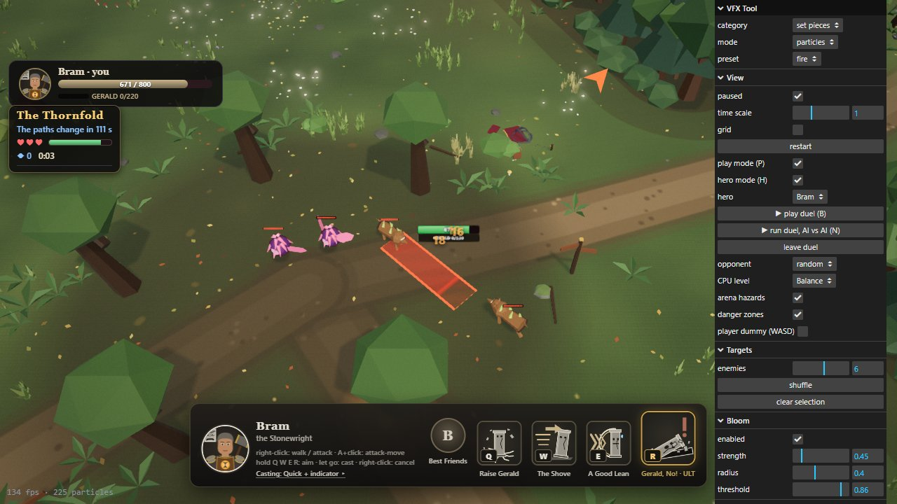

| Pattern | Who | What it does |
|---|---|---|
| Line | dockers, raiders, footmen, ashen soldiers | surround you from different sides; at most three strike at once, the rest wait a step back |
| Hunter | bark hounds, shard mites, dust wraiths | bite, fall back circling, one lunges in (short red line) |
| Pouncer | lurkers | keep off, then leap far (long red line), stand open after |
| Brute | brine crabs, moss giants, the Deep's slow golem | every few blows a slam (red circle) |
| Charger | knights, the Stag-Crowned | open with a charge from afar; after two blows back off and charge again (red line) |
| Caster | slingers, thorn sprites, bowmen, crystal golems, feeding roots | every third shot a fan of three weaker bolts; shoot whoever comes close to them |
| Warden | guards and the named | slam and charge in turn; below 40% health attack a third faster |
A pack picks one target together and holds it (2.5 s at least): you, or one of your summons or soldiers that stands in its face. Fair by rule: every special shows its zone first, never starts while you are rooted, stunned or slowed, one special at a time per pack, and it takes the place of a blow.